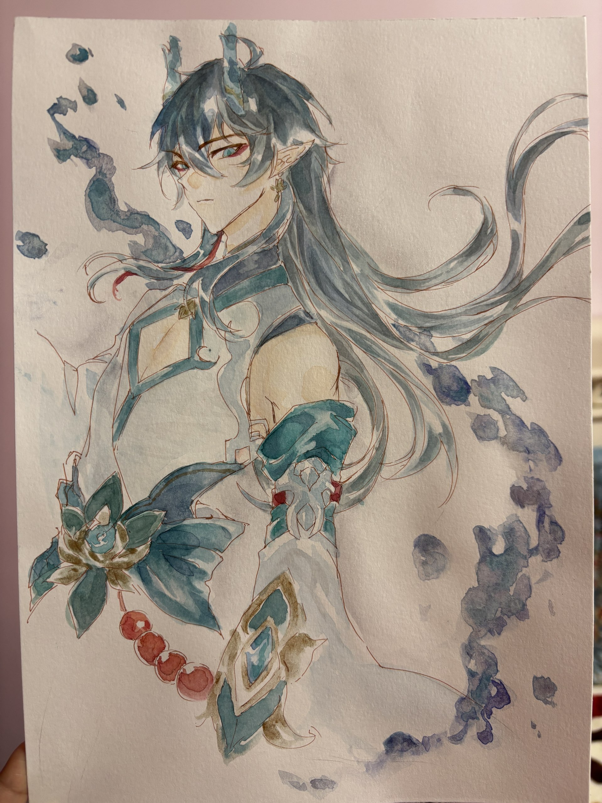

中国科学技术大学
计算机科学与技术 | 2024 - 至今
主修课程：数据结构、算法、图论
时渝童 中国科学技术大学大二在读学生
大学计算机专业大二学生，热衷前端开发。课堂夯实数据结构等专业基础，
课后深耕C、C++、Java等编程语言，通过线上课程补充工程化知识。
性格严谨，注重代码质量与用户体验，擅长独立解决技术问题，也乐于团队合作。
计划通过更多实战提升协作与复杂应用开发能力。

计算机科学与技术 | 2024 - 至今
主修课程：数据结构、算法、图论
2025.05 - 2025.06
使用Java构造出的宠物店管理系统